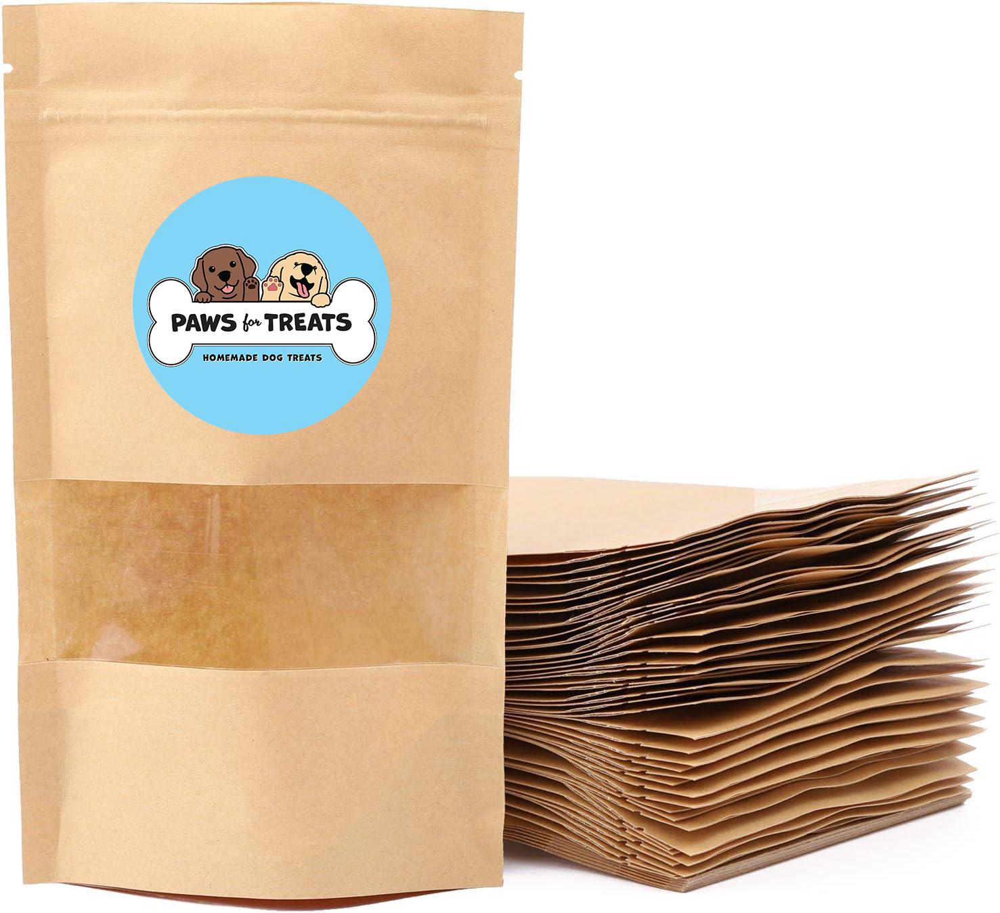
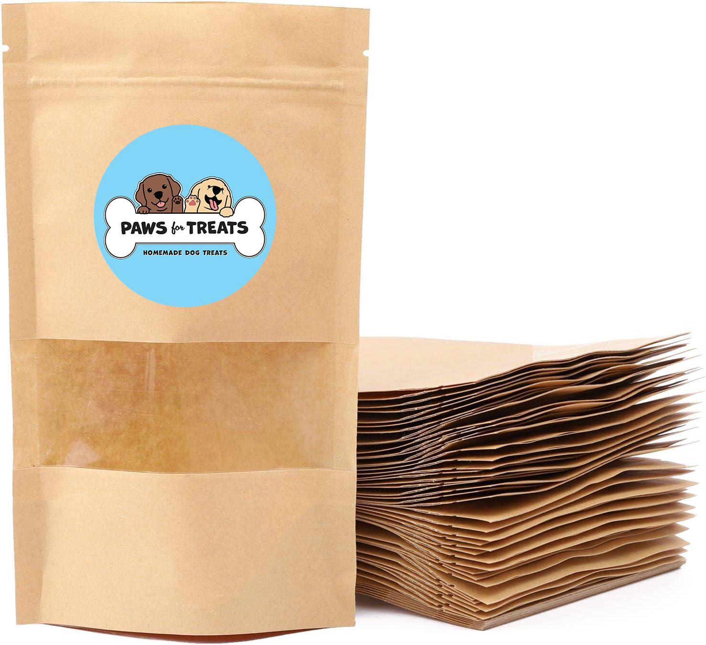

Logo design / Packaging concept - Paws for Treats
More
 

Paws for treats is a newly-formed business that sells homemade dog treats out of a food truck. I was approached by the owners of Paws for Treats to design a logo. In addition to designing a logo, I came up with a packaging concept for the business.
Keeping in mind the client's budgetary needs, I suggested ordering plain, paper bags online. I then suggested that I design a sticker for them to put on each bag of dog treats. This would allow them to purchase different packaging in the future when expanding to different products (such as cups for doggy ice cream).

Signage - Eyes Open Coffee Roasters
More
Made in a continuing education course at School of Visual Arts.
Landing page - Eyes Open Coffee Roasters
More
Made in a continuing education course at School of Visual Arts.
Landing page was made with Wix.
Package design - Deco Honey
More
Made in a continuing education course at School of Visual Arts.

Branding / Logo design - AIR 2023
More
I participated in an accessible web design competition called "AIR" (short for Accessibility Internet Rally), where I worked with a team of 5 developers to rebuild 10 pages of the website belonging to Windsor Park Neighborhood Association (a neighborhood association based in Austin, Texas).
I helped guide the visual design of the website and provided both branding and logo design services as an additional perk that wasn't required for the competition.
I redesigned the WPNA logo, staying true to the clients' desire to maintain certain elements of their original logo (namely the original tree illustration that they have used since the 80s) while incorporating elements from a new sign in the neighborhood. I offered several variations of the logo- as the client expressed the need for different logos that could be used in different contexts.
I also created a style guide for Windsor Park, which includes accessibility tips that they can refer to when maintaining their website/brand.
See style guide
Package design - Bread Factory
More
Made in a continuing education course at School of Visual Arts.
Hand-coded web design - 1,000 words
More
"1,000 words", a website about alt text and image description, was my senior thesis project for the BFA Graphic Design program at Virginia Commonwealth University.
The website contains educational content, such as an “Introduction to alt text” section that defines both alt text and image description, and shows examples of what these might look like. In addition to this is an interactive section of the website where one can practice writing alt text and image descriptions on a few select images I chose.
I also included an asynchronous workshop that one can participate in alone or with others, providing hands-on experience writing alt text and image descriptions while making mini zines with photos found in magazines.
Website was coded using HTML, CSS and Javascript.

Email design - Johnson's baby conditioner
More
Collaborated with copywriter Charlotte Boland to design a speculative email for Johnson's Baby Conditioner.

Hand-coded web design - Plants
More
This website was created as a final project for a web design class at Virginia Commonwealth University called "Handmade Web". In the website, I showcase photos of plants that I encountered during my daily life over the span of a few months.
I tried to identify which plants are native to the area they were found in or considered invasive of particular concern by local conservation groups. I also added a feature where others can help me identify.
Website was coded using HTML, CSS and Javascript.

Book cover redesign - Alice in Wonderland
More
Made in a continuing education course at School of Visual Arts.
Hand-coded web design - Structure
More
Virtual keyboard / playlist / some of my favorite lip syncs from the show Ru Paul's Drag Race.
Website was coded using HTML, CSS and Javascript.
Word search
More
5 ft. by 5 ft. printed word search with printed half-letter sized word list. The word list is part of an episode of the TV show Grey's Anatomy.